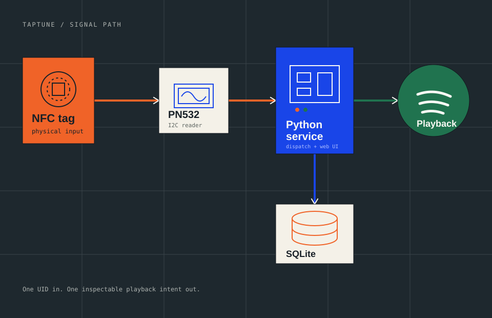

01
Touch
The PN532 reads a tag UID over I2C. No app, login, or menu required.
A small music machine for the home
TapTune turns a tap on a little piece of plastic into a playlist, an album, or the next track — powered by a Raspberry Pi and your Spotify account.

Why it exists
The main goal is to reduce our dependence on screens and use physical objects to play music. Instead of opening a phone or navigating a menu, a person can tap a simple object and the music starts. This makes the interaction more natural, more immediate, and more accessible in a real room.
The intention is not only to build a clever gadget. It is to create a way for people who are often kept away from screens — children, older adults, guests, or anyone who prefers tangible interfaces — to use music technology without friction. A tag becomes a familiar object, not a digital barrier: it invites interaction, lowers anxiety, and makes music part of the space around us.
The loop
Every scan follows the same small, inspectable path.
The PN532 reads a tag UID over I2C. No app, login, or menu required.
SQLite maps that UID to a Spotify URI or a control action like action:next.
Spotipy sends the intent to your Spotify Connect playback device.
Under the hood
Each concern has one home, so the project stays friendly to change.

The field guide
Follow the path in order. The default setup keeps hardware and playback concerns separate, so you can test on a laptop before moving to the Pi.
Open repositoryInstall Raspberry Pi OS Lite, enable SSH and Wi‑Fi, then update the system.
sudo apt update && sudo apt upgrade -y
Install Python tooling, clone the project, and create a virtual environment.
sudo apt install -y python3 python3-pip python3-venv git git clone https://github.com/DonatienCorrea/TapTune.git cd TapTune python3 -m venv .venv && source .venv/bin/activate
Base dependencies power local development; the Pi file adds PN532 support.
pip install -r requirements.txt pip install -r requirements-pi.txt
Enable I2C, reboot, then wire PN532 SDA to pin 3 and SCL to pin 5. Follow the README for board mode and power details.
sudo raspi-config nonint do_i2c 0 sudo reboot
Initialize the PN532 and read one UID before involving Spotify or the web service.
python -m app.pn532_diag --seconds 30
Copy the example environment and add your client credentials and refresh token.
cp .env.example .env # then edit .env
Start the service with reader polling off, assign the tested UID, verify dispatch, then set NFC_READER_ENABLED=true and restart for physical taps.
python -m app.main # open http://raspberrypi.local:5000
No hardware? No problem.
Fake mode and the simulator exercise the same dispatch path as a physical scan — useful while your Pi is still in the box.
$ python -m app.simulate --uid 01AABBCC \
--payload "spotify:playlist:37i9dQZF1DXcBWIGoYBM5M"
Safe to run without Spotify credentials or a PN532.